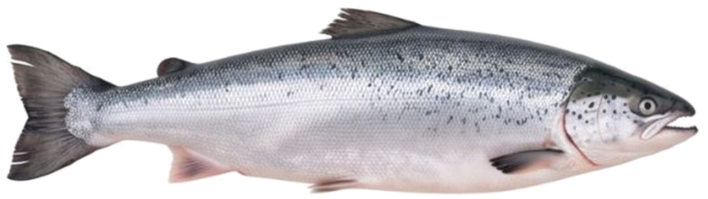
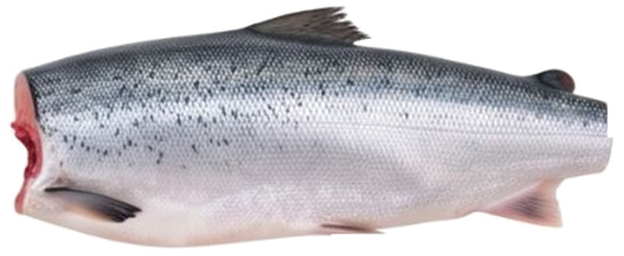
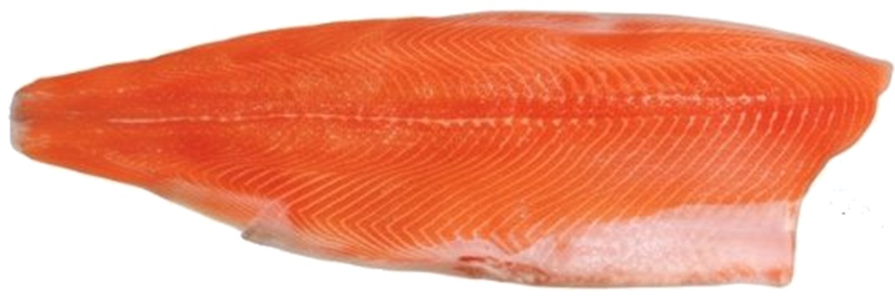
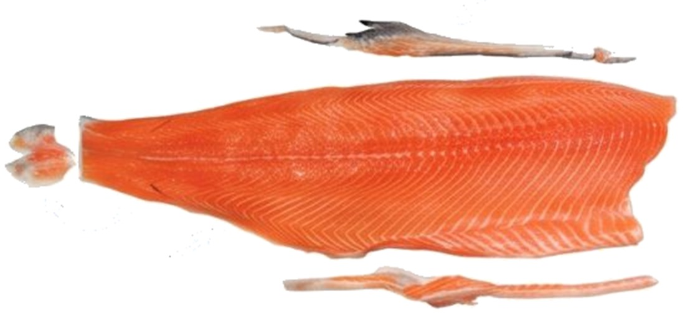
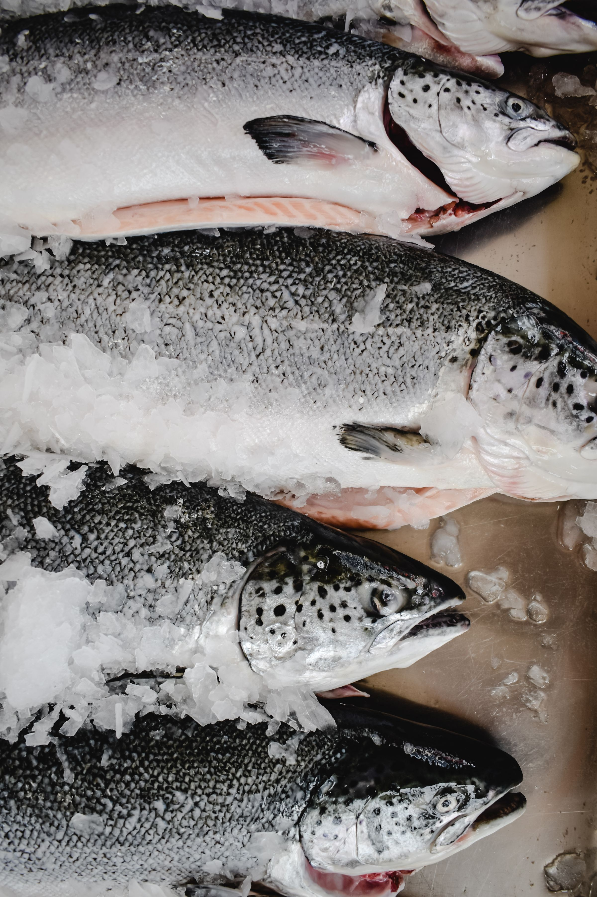
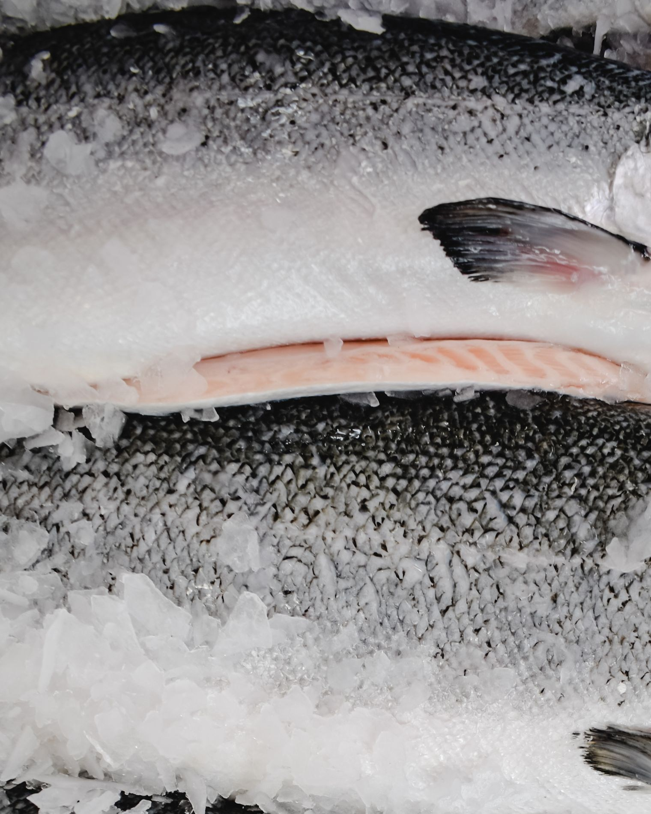

HONCon cabeza
Pescado entero y eviscerado, con cabeza y agallas intactas.
Salmón del sur de Chile en los formatos que usa la industria: entero con o sin cabeza, y filete en cinco niveles de corte. Elige formato, calidad y calibre, y te cotizamos por caja.
Así llega el salmón según el formato que elijas. En el pescado entero cambia si viene con o sin cabeza; en el filete, cuánto trabajo de limpieza trae hecho, del Trim A al Trim E.

Pescado entero y eviscerado, con cabeza y agallas intactas.

Pescado eviscerado, sin cabeza y sin agallas.

Se retira
Mantiene: aleta dorsal, hueso del cuello, trozo de cola, panza, espinas laterales, restos de aletas y grasa de los bordes, membrana ventral y piel

Se retira (además de lo del Trim A)
Mantiene: espinas laterales, restos de aletas y grasa de los bordes, membrana ventral y piel

Se retira (además de lo del Trim B)
Mantiene: restos de aletas y grasa de los bordes, membrana ventral y piel

Se retira (además de lo del Trim C)
Mantiene: piel

Se retira (además de lo del Trim D)
Listo para porcionar

Head On Gutted: salmón entero, eviscerado y lavado, con cabeza. Es el formato más cercano a la cosecha y el que permite al comprador aprovechar el pescado completo: filetear, porcionar o vender entero en mesón.

Head Off Gutted: eviscerado y sin cabeza, con corte limpio bajo la clavícula. Ocupa menos espacio en caja, tiene mejor rendimiento por kilo pagado y llega listo para filetear.

Filete de salmón con o sin piel, cortado según el nivel de trim que necesites. Mientras más avanzado el trim, más limpio llega el filete y menos trabajo queda en tu cocina o planta.
Cada trim incluye todo lo del anterior y suma un corte más. Con significa que el filete todavía lo trae; Sin, que ya se retiró. El Trim A es el más básico y el Trim E llega totalmente limpio y sin piel.
| El filete viene… | Trim A | Trim B | Trim C | Trim D | Trim E |
|---|---|---|---|---|---|
| Espinazo | Sin | Sin | Sin | Sin | Sin |
| Costillas (huesos de la panza) | Sin | Sin | Sin | Sin | Sin |
| Aleta dorsal | Con | Sin | Sin | Sin | Sin |
| Hueso del cuello (clavícula) | Con | Sin | Sin | Sin | Sin |
| Trozo de cola | Con | Sin | Sin | Sin | Sin |
| Panza (grasa del vientre) | Con | Sin | Sin | Sin | Sin |
| Espinas laterales (pin bones) | Con | Con | Sin | Sin | Sin |
| Restos de aletas y grasa de los bordes | Con | Con | Con | Sin | Sin |
| Membrana ventral (peritoneo) | Con | Con | Con | Sin | Sin |
| Piel | Con | Con | Con | Con | Sin |
Las especificaciones pueden variar levemente según la planta de proceso. Con cada cotización enviamos la ficha técnica del lote.
La calidad se define por el aspecto exterior del pescado. El color, la textura y el sabor de la carne son los mismos; cambia la presentación y el precio.
Pescado sin daños visibles en piel ni forma, color de carne parejo y buen calibre. Es la calidad para vender entero o en filete con piel a la vista del cliente.
Pescado con detalles externos —marcas en la piel, pequeñas deformaciones o golpes— que no afectan la carne. Rinde igual en proceso y tiene mejor precio por kilo.
Cuéntanos qué necesitas. Te respondemos con precio y fecha de despacho en menos de 24 horas.